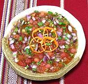

|
Xnipek - Dog Nose SauceMexico, Yucatán - Xnipek | ||||
| Makes: Effort: Sched: DoAhead: |
2-1/2 cups ** 25 min Most |
Very popular in the Yucatán region. The name comes from its heat, said sufficient to make your nose moist, but to a Californian accustomed to ordering Thai food "extra spicy" it holds little terror. | |||
|
2 1-1/4 5 1/3 1/2 1/4 |
# oz c t c |
Habanero Chilis (1) Tomatoes, ripe Onion (2) Bitter Orange Juice (3) Salt Cilantro |
Make - (25 min)
|